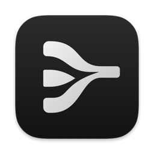

Elevique FlowTalk anywhere
you type.
Hold fn, speak, let go. Clean, punctuated text lands in any app on your Mac in about 0.6 seconds. Free, on your own Groq key.
Download for Mac
macOS 13+ · Apple Silicon & Intel · Free
Fillers gone
"um… 3, no wait, 4 pm" becomes "Let's meet at 4 pm."
Every app, its own style
Casual in chats, formal in email, exact in code and terminals.
Hears your tone
Angry, sad or excited comes through in punctuation and one emoji.
Hinglish & translation
Mixed Hindi and English typed in Latin letters, or translated with fn+⇧.
Command mode
Hold fn+⌃ and say "make this friendlier". Or use transforms on ⌃⌥1–9.
Meeting notes
Transcript, summary and action items, with no bot in the call.
Install
- Open the DMG and drag Elevique Flow into Applications.
- Open it. macOS says it can't verify the developer, because this free build isn't notarized. Click Done.
- Go to System Settings → Privacy & Security and click Open Anyway. You only do this once.
- Follow the Get started checklist: add a free key from console.groq.com/keys, allow the microphone and Accessibility, and set the 🌐 key to "Do Nothing".
Private by design
Audio and text go only to Groq, with your own key. History, notes and recordings stay on your Mac. The app's log never contains what you said.